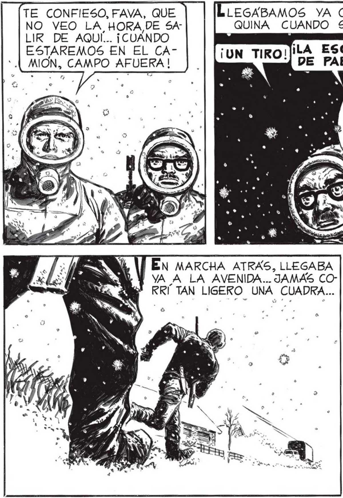

DEJÉMOSLO... NO TENEMOS NADA QUE HACER CON ÉL... Y NO HAGAMOS KUIDO, O TENLDREMOS QUE ANDAR A LOS EL OTRO ESTABA LOCO, SIN DUDA. PERO LOCO DE MIEIDO, COMO PODEMOS ESTARLO CUALQUIERA DE |) NOSOTROS CUANDO ME- | COMPRENDÍA FONDO LO QUE FAVALLI_ DECÍA. TAMBIÉN YO CONOCÍA LA SENSACION ESPANTOSA DE LLEGAR AL BORDE MISMO MÍ DEL ABISMO, o. DE ESTAR Á Ñ MILIMETROS DEL PÁNICO, DEL HORROR HECHO DEMENCIA. RRETROCEDIOS , AL AMPARO DE LAS SOMBRAS. POR EL CIELO, HACIA EL SUR, PASO. OTRA ESFERA INCANDES CENTE. TE CONFIESO, FAVA, QUE NO VEO LA HORA,DE SA LIR DE AQUÍ... ¡CUANDO ESTAREMOS EN EL CAMION, CAMPO AFUERA! ¡LA ESCOPETA DE PABLO!p— ÉN MARCHA ATRAS, LLEGABA YA A LA AVENIDA... JAMAS CORRÍ TAN LIGERO UNA CUADRA... ALGO SE ME ERIZO EN LA ES PALDA. TUVE NOCION MAS QUE NUNCA DE TODO EL ESPANTO DE AQUELLA "NEVADA” QUE SEGUÍA CAVENDO, DEL SILENCIO, DE LA O ENORME MUERTE QUE NOS ENVOLVIA, POR UN MOMENTO CREÍ QUE EL CEREBKO SE ME IBA... as ENSE7 GUIDA OIMOS "EL ARRANCAR DE UN MOTOR.. .QUE TAMBIÉN YO EMPEZARÍA A GRITAR ENLOQUECIDO.. PERO ALLÍ ESTABA FAVALLI. VAMOS, JUAN. YA ESTAMOS MU LEJOS: ESTA” TAN OSCURO el AQUÍ” QUE NO PODRÁ VERNOS, Y NOS DEJARON Pp SIN CAMION... /ALLA, AL FONDO, OTRA ESFERA INCANDESCENTE SE PRECIPITO DE LO ALTO, DEL CIELO QUE YY YA NO ERA CIELO, QUE E HERA ABISMO. AHORA Sl QUE CREI ENLOQUECER. MIENTRAS EL INVASOR Ñ SEGUÍA REFORZANDO A SUS POSICIONES, NO174% SOTROS, LOS POCOS e] SOBREVIVIENTES, NOS MA DESPEDAZABAMOS UNOS A OTROS, VERDADEROS LOBOS... 73
